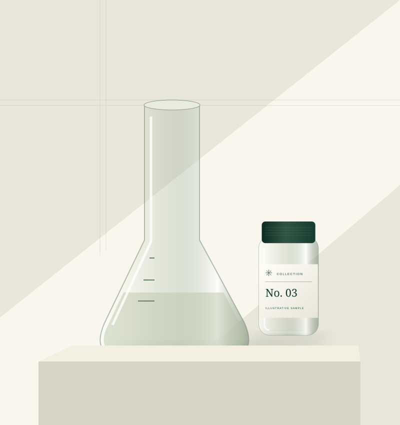

ABOUT FORMA
Less noise.
More clarity.
Forma is a working brand direction for a storefront built around better information architecture, premium presentation, and a simpler path from browsing to support.

WHY THIS STORE EXISTS
A research storefront should feel considered.
The experience is designed so customers can understand what they are viewing, find documentation, navigate shipping and support, and know where their order stands.
01
Original identityForest green, warm neutrals, editorial typography, and restrained motion.
02
Product-first UXCatalog, details, cart, checkout, tracking, and support share one system.
03
Built to evolveCentralized product data and configurable storefront settings.